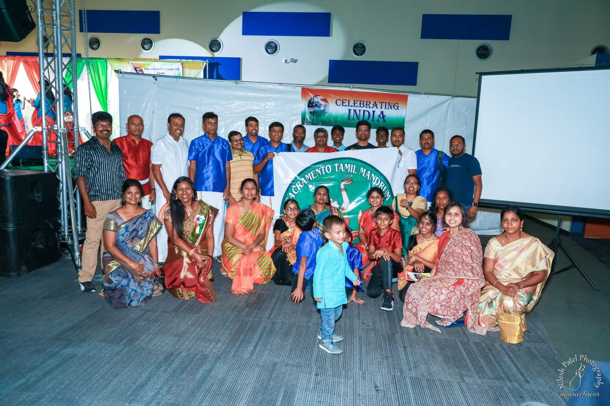

LATEST FEATURE The Catalyst for Unity Leading 2,500+ attendees and 40 performances for the Indian Association of Sacramento’s 20th anniversary.
 COMMUNITY IMPACT Humanitarian Milestones Supporting 150 flood-affected families in Tamil Nadu through Sacramento Tamil Mandrum initiatives.
INNOVATION BRAIN 2025 AI Summit Building readiness for Agentic Intelligence and defining professional career pathways in technology.
PROFILES IN SERVICE Bridging Safety & Software Managing high-impact applications for the Sacramento County Sheriff's Technical Operations Bureau.